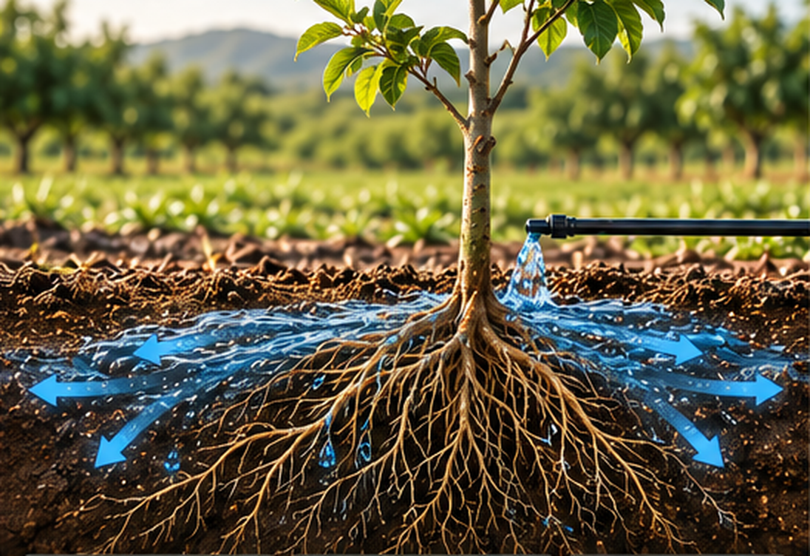
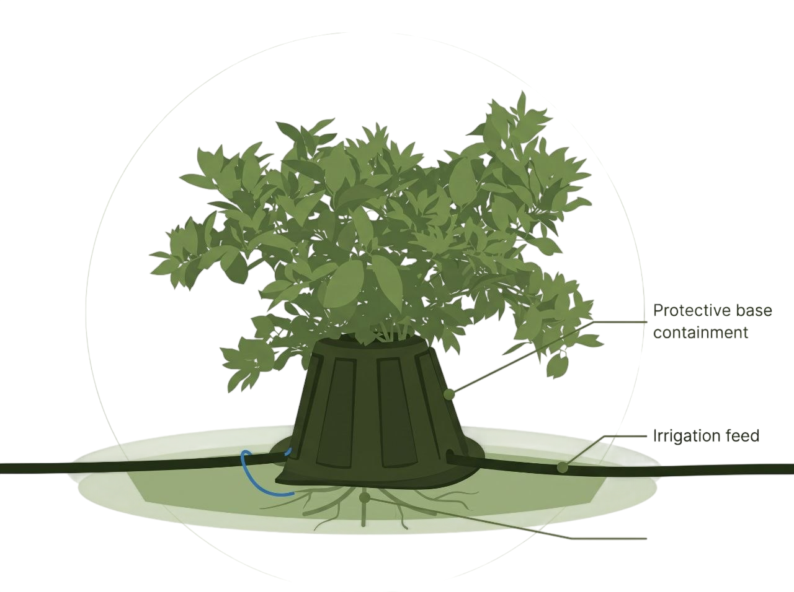
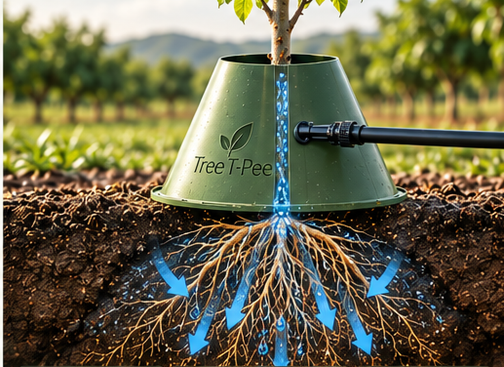
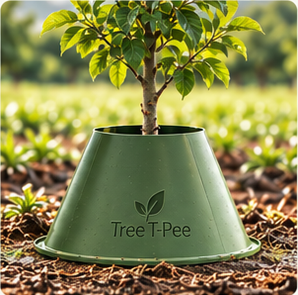
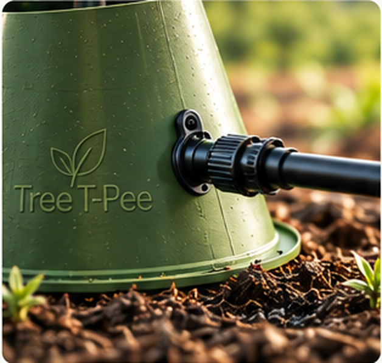
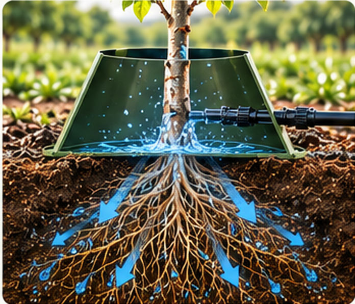

01 / WITHOUT CONTAINMENT↗

Water can spread out
Wind and open surroundings can disperse irrigation away from the intended root area.
A smarter way to grow
Smarter water and nutrient management for young trees. A practical agricultural solution designed to help growers make the most of every drop.
Designed for the field.
Root-focused irrigation support for young trees.
A cone-shaped water and nutrient containment system designed for young trees.
Tree T-Pee sits around the base of a tree to help direct irrigation water and liquid nutrients toward the root zone. It is designed to support early tree establishment while helping growers manage water and other resources more intentionally.
View official product information
When irrigation water disperses beyond the intended area, growers may use resources that never reach the tree's root zone.

Wind and open surroundings can disperse irrigation away from the intended root area.

The containment structure helps direct water and nutrients toward the tree's base.
Conceptual illustration for explanation only. Actual results depend on the crop, irrigation setup, conditions, and use.
The product is designed to fit around a young tree and work with an existing or newly installed drip or micro-sprinkler irrigation system.
Official installation instructions
Wrap the Tree T-Pee around the base of the young tree, over the individual irrigation system.

Route the irrigation tubing through the product's pre-drilled holes.

The containment structure helps keep water and nutrients closer to the tree's root zone.
Always follow the manufacturer's current installation instructions for fastening and placement.
Designed to help reduce water dispersal beyond the intended area.
↗Helps keep water and liquid nutrients closer to young-tree roots.
↗Designed for use during the early stages of tree establishment.
↗Designed to offer additional protection for young trees in cold conditions.
↗GROW WITH INTENTION
Better resource management starts with thoughtful design. Tree T-Pee is built around the idea of directing irrigation and nutrients where young trees need them—helping growers take a more focused approach to the resources they use.
Explore Tree T-Pee UniversityWhen good people come together for a noble cause, great things happen.
— Johnny Georges, FounderINNOVATION ROOTED IN EXPERIENCE
Tree T-Pee is a product of GSI Supply, Inc. Its story is rooted in the Georges family's experience in Florida's citrus and irrigation industries.
Rick Georges developed the original cone concept for frost protection. Drawing on years of hands-on irrigation experience, Johnny Georges saw an opportunity to make the design a practical, ongoing tool for managing water around young trees.
The product gained wider recognition when Johnny appeared on ABC's Shark Tank in 2013. The focus remains on a simple idea: help growers direct resources more efficiently, one tree at a time.
Read the official storyGrower perspectives, shared on the official Tree T-Pee website.
“Being new to the citrus industry, we did our own on-farm test with tree T-PEE and in a short period of time, we saw a substantial difference in water savings and tree growth.
“tree T-PEE has worked for us as a company. I think it's an economical way to grow a young orange tree.
“As a tree planter, I would strongly recommend the use of tree T-PEE. It creates a mini greenhouse atmosphere, holding in the moisture and heat.
Testimonials reproduced in shortened form from the official website; individual experiences are not guarantees of results.
For crop-specific advice or installation details, the Tree T-Pee team can help point you to the right information.
Read the official FAQIt is a cone-shaped water and nutrient containment system designed for young trees, particularly during early establishment.
The structure sits around the base of a tree and helps contain irrigation water and liquid nutrients closer to the root zone.
The manufacturer describes it for young trees and lists several crop types. Suitability depends on the tree, irrigation setup, and local growing conditions; check the official product guidance for your application.
The official instructions cover positioning it around the tree, routing irrigation tubing through the pre-drilled holes, fastening the product, and stabilizing the base. Read the complete current instructions before installation.
Frost protection is one of the product's intended uses. Performance depends on local conditions and the irrigation setup; consult the manufacturer for guidance specific to your operation.
Call the Tree T-Pee team at (863) 993-5335 or visit the official website for product details and contact options.
Grow with purpose
Discover how Tree T-Pee may support your approach to young-tree irrigation and resource management.